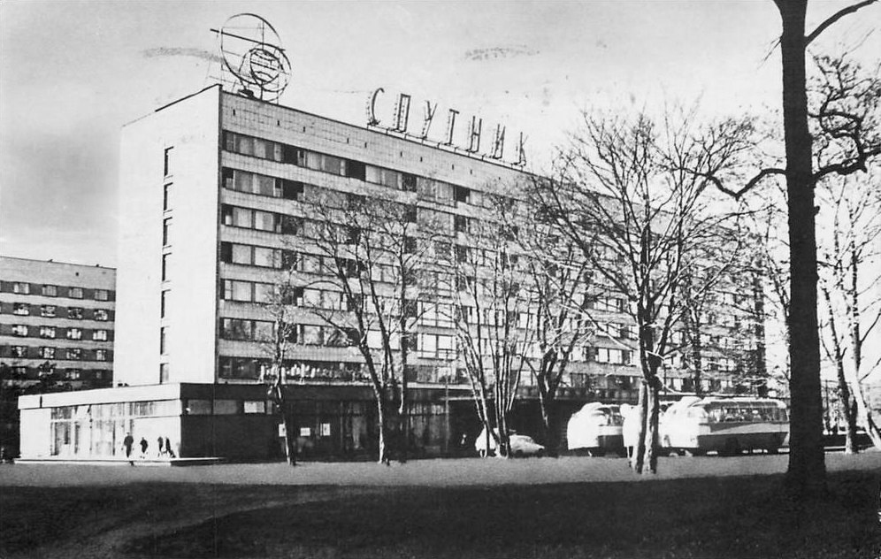
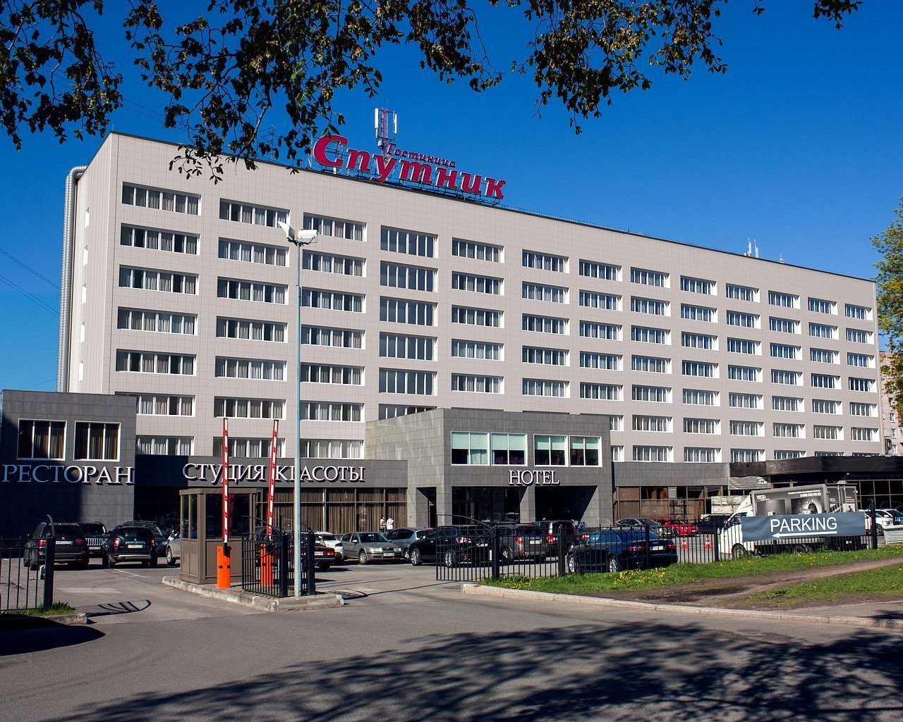

Если удавалось накопить денег (сэкономив те, что родители давали на школьные завтраки), я отправлялся в гостиницу. Осторожно входил, боясь, что меня тут же выпроводят. Тут была особая, сверкающая жизнь, другие люди, не такие, каких обычно я видел на улицах.
Я проходил к киоску, располагавшемуся на первом этаже, и покупал заветный журнал или жевательную резинку. И выбегал, счастливый, боясь, что меня окликнут, скажут, что мне нельзя было сюда заходить.
Первоначально внушительное здание в проекте застройки планировалось как большое общежитие. Связано оно с именем легендарного Виктора Фёдоровича Белова. Этого архитектора послевоенного Ленинграда называли зодчим Выборгской стороны. Уроженец Тверской области, он стал одним из тех, кто создавал новый облик Ленинграда. По его проектам было построено почти две сотни зданий в самых разных районах города.
Под руководством В. Ф. Белова целый ряд архитекторов проектировали и здание нового общежития. Правда, решением города оно было определено под гостиницу, получившую название «Спутник».